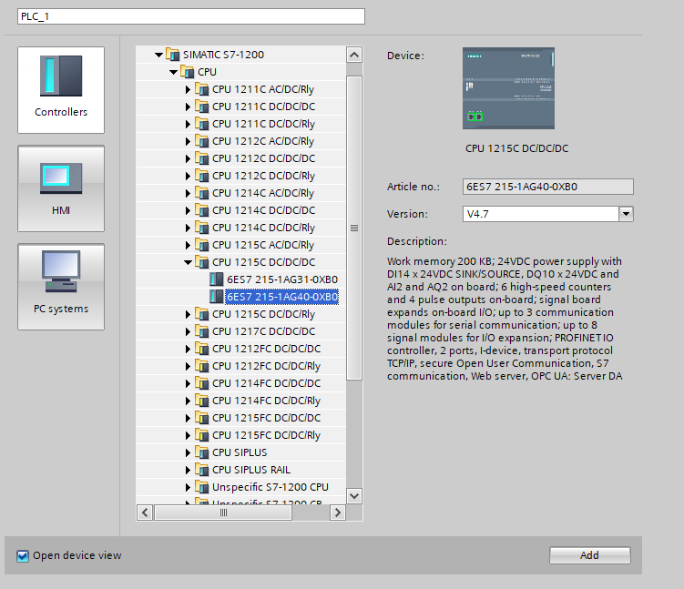
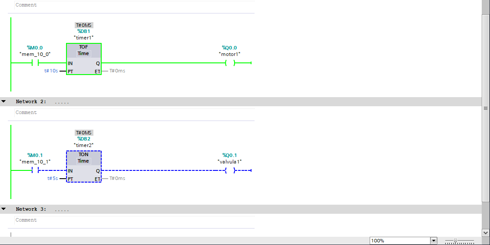

Conheça todos os nossos simuladores interativos de automação industrial
Com o disjuntor D1 fechado, a tensão chega até a entrada do botão B1. Ao pressionar B1: O contato NA se fecha, completando o circuito e acendendo a lâmpada H1.
Em repouso (B1 solto): A corrente flui pelo contato NF , mantendo a lâmpada H1 acesa (sinalizando repouso/desligado). A lâmpada H2 fica apagada.Ao pressionar B1: Os contatos comutam simultaneamente — o NF abre (apagando H1) e o NA fecha (acendendo H2, sinalizando acionamento).Ao soltar B1: Os contatos voltam ao estado inicial, reacendendo H1 e apagando H2..

Aplicação de conceitos avançados em circuitos de automação industrial.
Como funciona: O circuito de comando em aciona a bobina de um contator. Quando energizado, o contator fecha seus contatos principais de potência , permitindo a passagem de corrente para alimentar dispositivos de maior potência (como motores ou sistemas de grande porte).
Usa botões de pulso para dar partida e parada no circuito. O contato de selo mantém a bobina do contator energizada mesmo após o operador soltar o botão de partida. Botões de emergência e contatos de proteção atuam desarmando o circuito instantaneamente em caso de falha.

Como funciona: No software de automação (TIA Portal), seleciona-se e configura-se a CPU do CLP (linha Siemens S7-1200, como a CPU 1215C). Define-se o hardware de entradas e saídas digitais/analógicas que irão substituir a fiação física complexa por lógica de programação (Ladder/FBD).
Como funciona: Utiliza múltiplos contatores e temporizadores no bancada de testes para controlar sequências de acionamento — como reduzir a corrente de pico na partida do motor (Estrela-Triângulo) ou alterar o sentido de rotação das fases, garantindo partidas suaves e seguras.
Como funciona: O painel é configurado para testar temporizações de retardo na energização/desenergização. Ao ligar o comando, o temporizador conta o tempo definido antes de acionar o próximo contator ou acender as sinaleiras de indicação..

Como funciona: São programados blocos temporizadores como TON (Timer On-Delay) e TOF (Timer Off-Delay). Ao ativar uma entrada (ex: "Sensor"), o bloco executa a contagem de tempo via software antes de ligar ou desligar as saídas (ex: "motor1" ou "valvula1").
Como funciona: Circuito de Comando (à esquerda): Utiliza uma lógica mais complexa com múltiplos botões, contatos auxiliares, retenções e intertravamentos de segurança para coordenar a sequência de acionamento. Circuito de Potência (à direita): Controla a alimentação trifásica do motor elétrico, permitindo operações como partida sequencial, chaveamento de velocidade ou inversão de rotação.
Como funciona:Circuito de Comando Pressionando o botão B1, a bobina do contator K1 é energizada.O contato de selo K1 ($13\text{--}14$) mantém a bobina alimentada mesmo após soltar o botão B1.A lâmpada H1 acende indicando funcionamento.Pressionar o botão B0 ou se o Relé Térmico F1 detectar sobrecarga, o circuito abre e desliga o contator imediatamente.Circuito de Potência (Fases $L1, L2, L3$):A corrente trifásica passa pelo disjuntor D2, pelos contatos principais de K1 e pelo relé de sobrecarga F1, alimentando diretamente os terminais ($U1, V1, W1$) do Motor M1.